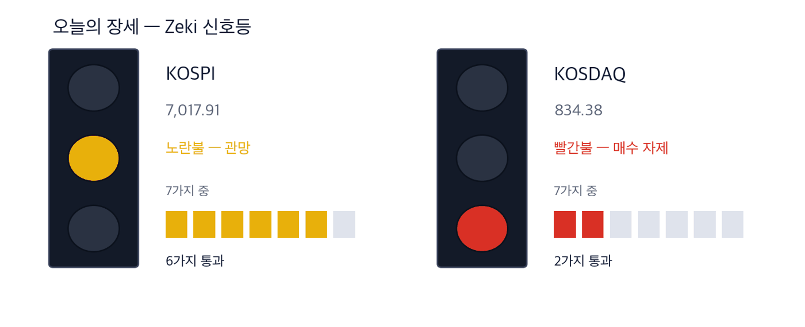
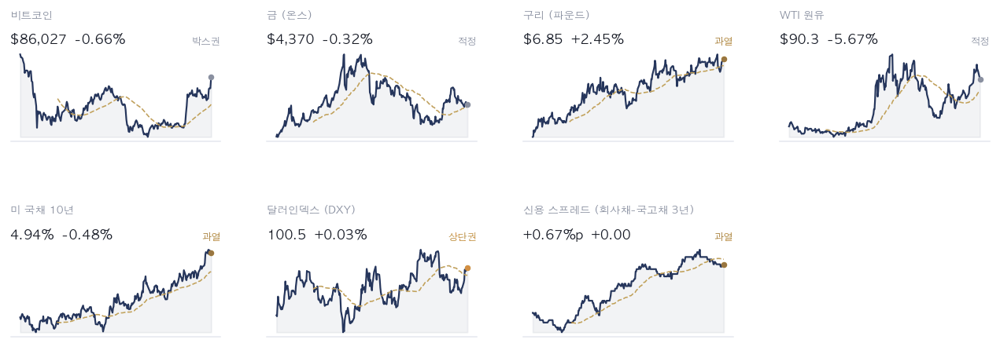
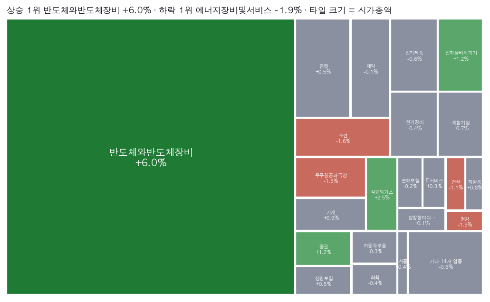
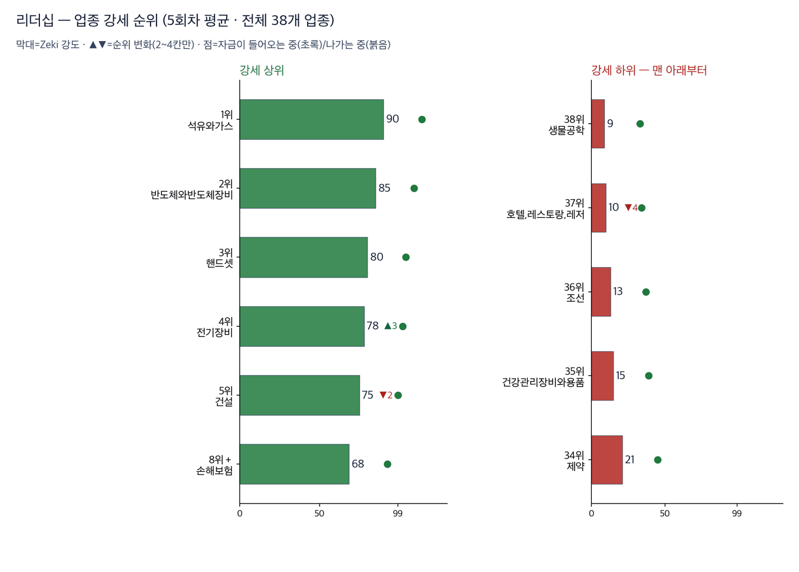
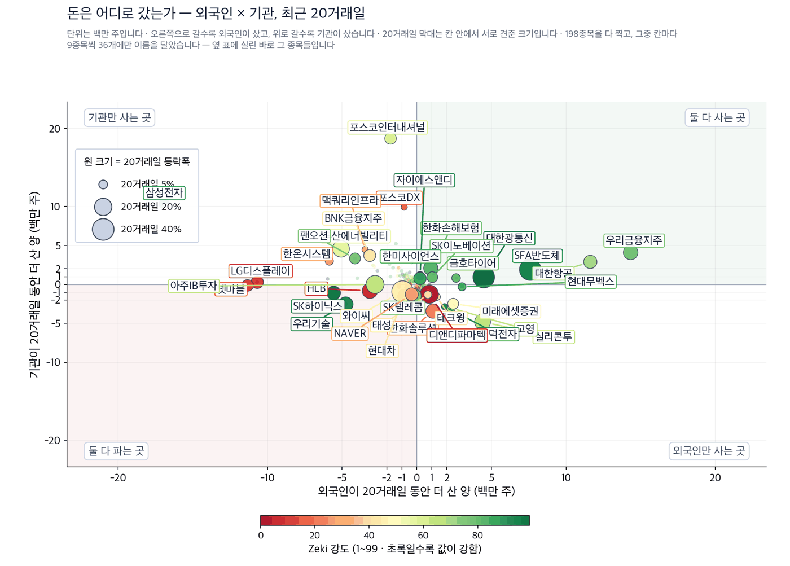
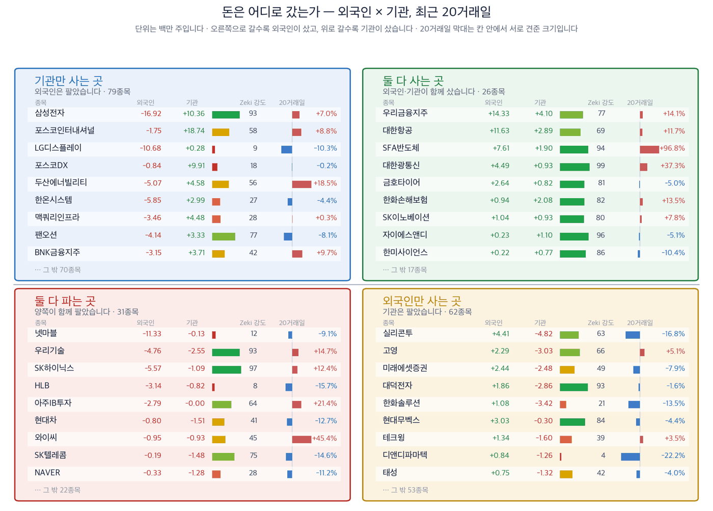
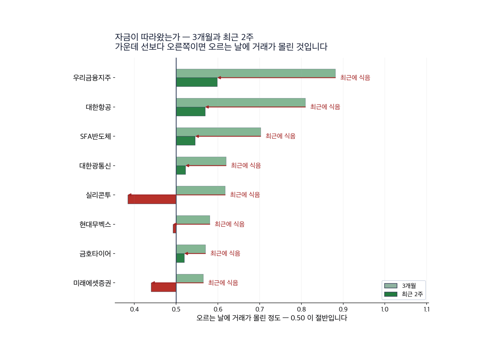
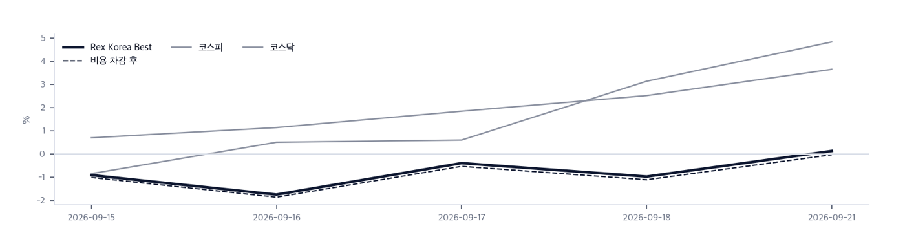
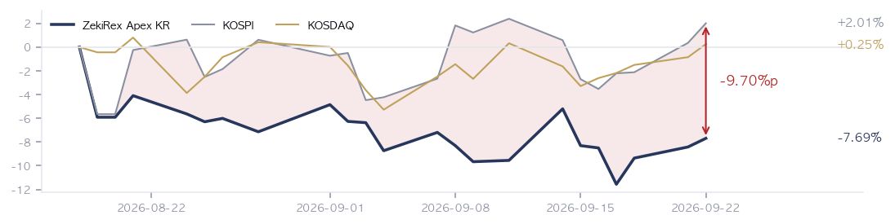

|
ZekiRex™ Apex KR — 2026년 9월 22일
오늘의 판단 · 1/3
데이터 기준 9/21 (KST) 종가 |
ZekiRex™ |
|
|
기름값 4.5% 급락… 서울 반영은 이틀 뒤 |
| 저희가 정한 규칙이 고른 종목과 그 성적을 매일 그대로 싣습니다. 맞았든 틀렸든 지우지 않습니다. |
|
THE REX CALL
기름값이 하루에 4.5% 내렸고, 그 효과는 서울이 닫힌 뒤 뉴욕에서 먼저 값에 들어갔습니다.
저희 기준을 넘은 16종목 가운데 한 종목도 사지 않았습니다. 4칸이 모두 차 있어 현금 비중은 0%입니다.
오늘 반드시 알아야 할 것
1. 현지시간 21일 뉴욕에서 서부텍사스산원유가 4.51% 내려 배럴당 95.78달러가 됐습니다. 같은 장에서 나스닥 종합은 2.26% 올랐습니다. 기름값이 내리면 물가 부담이 줄고, 물가 부담이 줄면 금리도 내립니다. 미 국채 10년물은 4.96%로 내렸습니다. 한국은 원유를 전량 사 오는 나라라 이 하락은 수입 대금과 물가 양쪽에 같은 방향으로 적용됩니다. 다만 이 값은 서울이 닫힌 뒤에 만들어졌습니다. (머니투데이·블룸버그) 2. 21일 코스피는 1.65% 올라 7,007.72로 마쳤고 코스닥은 1.11% 올라 836.27입니다. 7,000선 위에서 마친 것은 9월 10일 이후 처음입니다. 다만 이 종가는 뉴욕이 열리기 전에 매겨진 값입니다. 21일 뉴욕 장(현지시간)에서 나스닥이 2.26% 더 오른 몫은 아직 서울 값에 들어가 있지 않습니다. 22일 개장에서 두 가지가 한꺼번에 반영됩니다. 반도체를 들고 계시다면 그 갭이 어디까지 메워지는지가 22일의 관전 지점입니다. 3. AMD 시가총액이 1조달러를 넘었습니다. 올해만 180% 올랐습니다. 미국 반도체가 오르면 한국에서는 장비와 소재를 대는 회사가 먼저 움직입니다. 저희 기준을 넘은 16종목 가운데 3종목이 그 자리에 있습니다. 반대로, 미국 반도체가 꺾이면 같은 3종목이 함께 내립니다. 한 나라의 지수가 아니라 한 업종에 걸린 이야기라는 점을 보셔야 합니다. (머니투데이·연합뉴스) 4. 미 재무장관이 23일부터 이란 항공사의 운항을 세계에서 막겠다고 했습니다. 이 날짜는 기름값이 4.5% 내린 바로 이틀 뒤입니다. 중동에서 공급이 막힐 수 있다는 쪽으로 읽히면 21일의 하락은 그대로 되돌아옵니다. 항공과 해운처럼 연료가 원가의 큰 몫인 업종을 보고 계시다면, 21일 하락을 원가 가정에 옮겨 적기 전에 이 날짜를 먼저 확인하십시오. 5. 서울은 22일과 23일 이틀만 더 열리고 추석 연휴로 들어갑니다. 24일 미중 정상회담은 국내 증시가 닫혀 있는 날에 열립니다. 회담 결과는 28일 개장에 한꺼번에 반영됩니다. 연휴 동안 값을 확인할 수 없다는 것은, 이틀 안에 정할 것과 닷새 동안 손댈 수 없는 것을 미리 나누어 두셔야 한다는 뜻입니다. 비중을 정하실 자리는 23일 종가입니다.
| |
 이 그림 읽는 법 | 켜진 등 | 오늘 시장이 어떤 상태인지 알려 줍니다. 초록은 매수 우위, 노랑은 관망, 빨강은 매수 자제입니다. | | 채워진 칸 | 7가지 조건 중 몇 가지를 만족하는지입니다. 많이 만족할수록 오르는 종목이 넓게 퍼져 있습니다. | | 칸이 다 찼는데 노랑·빨강이면 | 다른 이유로 한 단계 낮춘 것입니다. 그림 아래에 그 이유를 적었습니다. |
|
최근 10거래일 국면 추이 (왼쪽이 과거) 방향 — 신호등은 빨간불입니다. 다만 코스피 자체 점검은 7가지 가운데 6가지를 통과했고 코스닥은 2가지입니다. 신호등이 그보다 늦은 것은 올라갈 때만 사흘 연속 같은 값을 요구하기 때문입니다. 저희 규칙에서 이 신호등은 매수를 막지 않습니다. 위험은 종목마다 손절가로 관리합니다.
| |
| 오늘의 조치 |
| 오늘 신규 매매 없음. 규칙이 요구하지 않는 날에 거래하지 않는 것도 하나의 결정입니다. |
|
| 오늘 하나만 깊이 보면 |
|
기름값이 4.5% 내린 자리에서 서울의 마지막 이틀이 시작됩니다
현지시간 21일 뉴욕에서 서부텍사스산원유가 4.51% 내려 배럴당 95.78달러가 됐고 브렌트유는 100.34달러입니다. 같은 장에서 나스닥 종합은 2.26%, S&P 500은 1.49% 올랐습니다. 미 국채 10년물은 5.00%에서 4.96%로 내렸습니다. 원유가 내리면서 금리 부담이 함께 줄었고, 금리에 민감한 쪽이 더 올랐습니다. (머니투데이·블룸버그) 왜 그런가. 수요가 꺾여서 내린 것이 아닙니다. 같은 날 구리는 2.52% 올라 파운드당 6.78달러이고, 구리는 수요가 식으면 가장 먼저 내리는 쪽입니다. 달러인덱스도 0.21% 올라 100.4이라 달러가 약해져서 생긴 하락도 아닙니다. 남는 설명은 공급 쪽 사정과 24일 미중 정상회담 기대입니다. 둘 다 며칠 안에 방향이 바뀔 수 있는 종류입니다. 다음에 무엇이. 남는 질문은 이 하락이 며칠짜리냐는 것입니다. 23일 미국의 이란 항공 조치가 그 답을 먼저 내놓고, 24일 미중 정상회담이 나머지를 정합니다. 서울은 그 두 날 가운데 23일 하루만 열려 있습니다. 그래서 이틀 장에서 정하실 것은 방향이 아니라 연휴를 넘길 비중입니다.
그래서 우리는: 저희 장부 4종목은 GS, 지엔씨에너지, 현대해상, 타이거일렉입니다. GS는 정유를 갖고 있어 기름값 하락이 곧장 닿는 이름이고, 원유를 싸게 사면 정제마진은 넓어지지만 갖고 있던 재고의 값은 내려갑니다. 두 힘이 반대로 작용하므로 4.5% 하락을 호재로만 읽으시면 안 됩니다. 지엔씨에너지와 타이거일렉은 전력 설비와 반도체 쪽이라 21일 뉴욕 장(현지시간)의 상승과 같은 방향에 있습니다. 지금 손절가에 가장 가까운 것은 현대해상이며 여유는 3.40%입니다.
Rex Lens™
| |
| 그 밖에 알아야 할 것 |
| 대미투자 1호 사업이 웨스팅하우스 지분 문제로 막혔습니다 · 웨스팅하우스 지분율을 비롯한 상업적 조건이 걸려 대미투자 1호 사업이 위태롭다고 연합뉴스가 전했습니다. 정부는 22일 국회 산자위에 이 내용을 보고합니다. (연합뉴스 · 동아일보) → 동아일보는 지분 인수비를 민간이 나누어 내는 구상에 기업들이 난색을 보였다고 전했습니다. 어떤 원전을 지을지 정해지지 않았다는 것이 이유입니다. 발전 설비와 기자재를 만드는 회사를 보고 계시면 22일 보고에서 분담 비율이 나오는지 보십시오. | | 폭스바겐이 유럽 우량주 지수에서 빠집니다 · 폭스바겐이 유럽 우량주 지수에서 퇴출되고 그 자리에 노키아와 엔지가 들어간다고 조선일보가 21일 전했습니다. (조선일보) → 지수에서 빠지면 그 지수를 따라 사는 펀드가 기계적으로 팔아야 합니다. 실적과 무관한 매도가 며칠 동안 값을 누릅니다. 유럽 지수를 따르는 상품을 들고 계시면 구성종목 교체일이 언제인지 확인하실 자리입니다. | | 트럼프와 시진핑이 인공지능 대화 채널을 논의합니다 · 두 정상이 인공지능 분야의 대화 채널을 논의한다고 경향신문이 전했습니다. 양국 실무진은 회담에 앞서 이미 만났습니다. (경향신문 · Semafor) → 인공지능 대화 채널은 반도체 수출 규제와 같은 자리에 놓입니다. 규제가 느슨해지면 장비와 소재를 대는 회사에 먼저 적용됩니다. 다만 회담 날인 24일 국내 증시는 추석으로 닫혀 있어, 결과는 28일 개장에 한꺼번에 반영됩니다. | | 삼성전자가 4나노 증설을 준비합니다 · 고대역폭 메모리 수요로 파운드리가 살아나면서 삼성전자가 4나노 증설을 준비한다고 머니투데이가 21일 전했습니다. 광주 반도체 클러스터의 설비 투자도 시작됐습니다. (머니투데이 · 연합뉴스) → 증설은 장비와 소재를 대는 회사의 주문으로 먼저 나타납니다. 저희 기준을 넘은 16종목 가운데 마이크로컨텍솔과 샘씨엔에스, 타이거일렉이 그 자리에 있습니다. 다만 발표와 실제 발주 사이에는 몇 분기가 놓입니다. | | 증권사가 물린 부동산 PF 사업장이 64곳입니다 · 증권사가 자금을 넣고 묶여 있는 부동산 프로젝트파이낸싱 사업장이 64곳이라고 머니투데이가 21일 전했습니다. 정부는 정상화를 재촉하고 있습니다. (머니투데이) → 이것은 증권업 실적에 남아 있는 묵은 손실입니다. 저희 기준을 넘은 16종목에 증권사는 없고 은행 3곳과 손해보험 3곳이 있습니다. 금융주를 한 덩어리로 보시면 안 되는 이유가 여기 있습니다. |
|
한국과 미국을 잇는 것: 21일 코스피 종가 7,007.72는 뉴욕이 열리기 전에 매겨진 값입니다. 그 뒤 나스닥 종합이 2.26% 올랐고 기름값은 4.51% 내렸습니다. 서울은 22일 개장에서 이 둘을 한꺼번에 받습니다. 원유를 전량 사 오는 나라에서 기름값 하락과 원화 강세는 같은 방향으로 겹칩니다. |
|
|
시장이 오늘 한 일 · 2/3
데이터 기준 9/21 (KST) 종가 |
ZekiRex™ |
|
|
| 핵심 지표 |
코스피 7,008 +1.65% · 고점 −23.1% 21일 1.65% 올라 7,007.72로 마쳤습니다. 9월 10일 이후 처음 7,000선 위에서 끝냈고, 이 종가가 남은 이틀 장의 출발점입니다. 박스권 | 코스닥 836 +1.11% · 고점 −31.8% 박스권 | 원/달러 ₩1,375.00 21일 1,374.9원입니다. 8거래일 만에 내렸습니다. 원유를 사 오는 값이 내려 기름값 하락과 같은 방향으로 겹칩니다. 하단권 | 국고채 3년 4.05% 4.05%입니다. 9월 18일 4.03%에서 소폭 올랐습니다. 미국 금리가 내린 날 국내 조달 비용은 내리지 않았습니다. 과열 | S&P 500 — | 포트폴리오 -7.69% 현금 0% · 보유 4종목 8월 18일 시작 이후 -7.69%이고 코스피는 +2.01%입니다. 9.70%포인트 뒤에 있습니다. 좋지 않은 숫자지만 그대로 알려 드립니다. 설정 이후 |
|
Rex Pulse 거시 지표 16종 1년 추이  Rex Pulse™ — 지수·가상자산 / 통화 / 원자재 / 채권 16종, 1년 흐름과 50일 평균값(점선) · 기준 한국 9/21 종가, 뉴욕 9/22 종가(현지시간) |
미 국채 10년물은 4.96%로 5% 아래로 내려왔습니다. 달러인덱스는 100.4입니다. 서부텍사스산원유는 95.78달러, 브렌트유는 100.34달러입니다. 구리는 파운드당 6.78달러로 2.52% 올랐습니다. 기름이 내리는데 구리가 오른 것은 수요가 꺾인 것이 아니라는 뜻입니다. 그래서 보실 것은 2가지입니다. 먼저 10년물이 5% 아래에 머무는지입니다. 다음은 구리가 이 자리를 지키는지입니다. 둘이 함께 유지되면 원가는 내리고 수요는 남는 구간이 이어집니다. |
업종 히트맵 — 오늘의 상승·하락 지도  색은 당일 등락(짙을수록 큼), 타일은 시가총액입니다. 상단에 당일 상승·하락 1위가 적혀 있고, 큰 칸이 움직인 날이 지수가 움직인 날이라는 뜻입니다 — 아래 리더십 순위(추세의 힘)와 함께 읽으십시오. |
| 리더십 — 업종 강세 순위 |
 이 그림 읽는 법 | 막대 | 그 업종 종목들을 Zeki 강도 순으로 세웠을 때 **종목 절반이 그 위, 절반이 그 아래인 값**입니다. 최근 5회차를 평균해 하루치 흔들림을 걷어냈습니다. | | ▲▼ 숫자 | 하루 전보다 순위가 몇 칸 움직였는지입니다. 1칸은 너무 작고 5칸 이상은 절반이 되돌아와서(실측) 2~4칸만 적습니다. | | 점 | 20거래일 자금 순위의 방향입니다. 초록이면 들어오는 중, 붉으면 나가는 중입니다. | | 공동 순위 | 값이 같으면 같은 순위입니다. 억지로 가르지 않습니다. | | 강세 상위 | 강도가 가장 높은 업종들입니다. 자리가 열리면 여기서부터 찾습니다. | | 강세 하위 | 전체 업종 가운데 맨 아래입니다. 번호는 왼쪽과 같은 잣대라, 38개 업종이면 38위가 가장 약합니다. 지금 새로 살 자리가 아니고, 들고 계신 종목이 여기 속하면 손절가부터 확인하실 자리입니다. 바닥에서 돌아서는 업종은 막대보다 점이 먼저 초록으로 바뀝니다. | | 번호가 건너뛰면 | ＋ 표시가 붙은 업종입니다. 맨 아래 다섯에 들지는 않았지만 본문이 짚었거나 저희가 들고 있어 함께 실었습니다. 자료가 빠진 것이 아닙니다. |
| 순위 | 업종 | Zeki 강도 | 변화 |
|---|
| 1위 | 석유와가스 | 90 | | | 2위 | 반도체와반도체장비 | 85 | | | 3위 | 핸드셋 | 80 | | | 38위 | 생물공학 | 9 | | | 37위 | 호텔,레스토랑,레저 | 10 | ▼4 | | 36위 | 조선 | 13 | |
|
| 수급 — 외국인·기관은 어느 쪽이었나 |
 이 그림 읽는 법 | 점 하나 | 종목 하나입니다. 가로·세로 위치가 두 값을 그대로 나타내고, 가운데 가로·세로로 그어진 두 선이 기준선입니다. 네 귀퉁이의 이름표가 그 칸의 뜻입니다. | | 점 크기 | 최근 20거래일 등락폭입니다. 오르든 내리든 크게 움직였으면 큰 점입니다. | | 점 색 | Zeki 강도입니다. 초록일수록 주가가 시장에서 강합니다. | | 30종목만 | 이름이 겹치면 못 읽기 때문입니다. 가운데 몰린 나머지는 움직임이 거의 없는 종목들이라 뺐습니다. |
 이 그림 읽는 법 | 이 그림이 말하지 않는 것 | 같은 기간의 수급과 등락을 나란히 놓은 것입니다. 앞으로는 이렇습니다 — 외국인과 기관이 사면 하루 이틀은 실제로 오릅니다. 그 다음 되돌립니다. 그리고 그 폭이 세금과 수수료보다 작습니다. 그래서 이 그림을 보고 사고파시면 손해입니다. 둘 다 사들이는 것을 보고 그 다음 날 사면, 20거래일 뒤에 올라 있을 확률은 48%입니다 — 아무 종목이나 골랐을 때(49%)와 같습니다. 저희가 503종목 17년치로 쟀습니다. | | 네 칸 | 가로와 세로 두 값이 각각 기준선을 넘었는지로 넷을 가릅니다. 오른쪽 위는 둘 다 넘은 곳, 왼쪽 아래는 둘 다 못 넘은 곳, 나머지 두 칸은 한쪽만 넘은 곳입니다. 칸 이름이 그 칸에 든 종목의 상태를 한 문장으로 적어 둔 것입니다. | | 가운데 두 칸 | 두 기간을 비교하는 자리입니다. 글자 A~E가 있으면 이 업계가 쓰는 표준 등급으로, A는 강한 매수, B는 매수 우세, C는 매수와 매도가 반반, D는 매도 우세, E는 강한 매도를 뜻합니다(전체를 다섯으로 나눈 순위라 A가 상위 20%입니다). 숫자가 있으면 그 기간에 산 양에서 판 양을 뺀 것입니다. | | 칸마다 9종목 | 그 칸에서 움직임이 가장 큰 순서입니다. 나머지는 칸 아래에 몇 종목인지만 적었습니다. 옆 산점도가 이름을 다는 종목이 바로 이 9종목씩입니다. | | 20거래일 막대 | 0을 가운데 두고 오른쪽이 상승, 왼쪽이 하락입니다. 길이는 같은 칸 안에서만 서로 비교하십시오 — 칸마다 기준이 다릅니다. | | Zeki 강도 | 1~99 순위입니다. 막대가 길수록, 초록에 가까울수록 그 종목의 주가가 시장에서 강합니다. |
|
수급과 거래량을 한 줄로 | 종목 | 외국인 · 기관 20거래일 | 거래량 | 어떻게 읽나 |
|---|
| 넷마블 251270 | 외 -11.3 · 기 -0.1 | 15.58배 | 주의 — 둘 다 파는데 물량이 늘었습니다 | | 아주IB투자 027360 | 외 -2.8 · 기 -0.0 | 3.90배 | 주의 — 둘 다 파는데 물량이 늘었습니다 | | 와이씨 232140 | 외 -0.9 · 기 -0.9 | 2.43배 | 주의 — 둘 다 파는데 물량이 늘었습니다 | | 현대무벡스 319400 | 외 +3.0 · 기 -0.3 | 1.35배 | 주의 — 외국인만 사고 다른 쪽은 팔았습니다 | | BNK금융지주 138930 | 외 -3.1 · 기 +3.7 | 0.98배 | 주의 — 기관만 사고 다른 쪽은 팔았습니다 | | 고영 098460 | 외 +2.3 · 기 -3.0 | 0.78배 | 주의 — 외국인만 사고 다른 쪽은 팔았습니다 | | 두산에너빌리티 034020 | 외 -5.1 · 기 +4.6 | 0.72배 | 주의 — 기관만 사고 다른 쪽은 팔았습니다 | | 팬오션 028670 | 외 -4.1 · 기 +3.3 | 0.68배 | 주의 — 기관만 사고 다른 쪽은 팔았습니다 |
거래량은 최근 5거래일 평균 ÷ 50일 평균입니다. ✓ 는 저희 진입 규칙(MACD 라인 > 0)도 통과했다는 뜻이고, ✗ 는 수급은 좋지만 규칙 밖이라는 뜻입니다. 이 읽는 법이 맞는지는 지금 세고 있습니다. |
결론은 아직 없습니다 — 칸마다 9건이고 60건이 필요합니다. 하루 9건씩 쌓이므로 약 6거래일 뒤에 답이 나옵니다. 그때 답하는 것은 「외국인·기관이 산 종목이 정말 올랐나」입니다. 9월 18일부터 세고 있습니다 — 기관만 사는 곳 9건 · 둘 다 사는 곳 9건 · 둘 다 파는 곳 9건 · 외국인만 사는 곳 9건.

이 그림 읽는 법
| 막대 둘 | 위가 3개월, 아래가 최근 2주입니다. 같은 종목의 두 기간을 나란히 놓았습니다. |
| 가운데 선 | 0.50 입니다. 오른쪽이면 오르는 날에 거래가 더 몰렸고, 왼쪽이면 내리는 날에 몰렸습니다. |
| 화살표 | 3개월에서 2주로 가는 방향입니다. 오른쪽으로 가면 최근에 더 들어온 것이고, 왼쪽이면 식은 것입니다. |
| 맨 오른쪽 글씨 | 그 방향을 말로 적은 것입니다 — 「최근에 더 들어옴」이면 자금이 이어지는 중입니다. |
이름을 확인한 종목 전부를 넷으로 갈랐습니다. 오른쪽으로 갈수록 외국인이 샀고, 위로 갈수록 기관이 샀습니다. 지금 누가 사고 있는지를 보여 주는 자리이지 무엇을 사라는 자리가 아닙니다.
업종 — 값의 강세와 돈의 흐름을 나란히
돈이 먼저 온 곳 — 값은 아직
| 업종 | 강세 | 자금 | 20거래일 |
|---|
| 조선 | 49 | 13 | +797,760주 |
| 생명과학도구및서비스 | 52 | 18 | +45,682주 |
| 기계 | 37 | 8 | +2,391,083주 |
값만 센 곳 — 돈은 빠지는 중
| 업종 | 강세 | 자금 | 20거래일 |
|---|
| 백화점과일반상점 | 9 | 41 | -4,719,852주 |
| 전자장비와기기 | 10 | 40 | -4,586,137주 |
| 에너지장비및서비스 | 14 | 42 | -4,881,093주 |
강세 순위 — Zeki 강도(12개월 가중)로 세운 순위입니다. 최근 5회차를 평균해 하루치 흔들림을 걷어냈습니다.
자금 순위 — 20거래일 순매수로 세운 순위입니다. 값이 아니라 **돈이 들어온 양**을 봅니다.
공동 순위 — 값이 같으면 같은 순위를 줍니다. 억지로 가르지 않습니다.
두 순위가 어긋나면 — 그 자리가 볼 만합니다. 돈이 먼저 오면 값이 아직인 것이고, 값이 먼저 세면 돈이 빠지는 중일 수 있습니다.
|
|
우리가 한 일 · 3/3
데이터 기준 9/21 (KST) 종가 |
ZekiRex™ |
|
|
| 종목 | 비중 | 평가금액 | 평가손익 | 현재가 | 손절가 | 여유 | 보유 기간 | 다음 이벤트 | | 현대해상 | 24% | ₩225,407,200 | −₩11,547,500 | ₩48,800 | ₩47,196 | +3.4% | 11일 | — | | GS | 25% | ₩226,177,600 | −₩5,176,600 | ₩113,600 | ₩106,904 | +6.3% | 29일 | — | | 타이거일렉 | 24% | ₩223,315,000 | +₩6,490,000 | ₩75,700 | ₩67,620 | +11.9% | 5일 | — | | 지엔씨에너지 | 27% | ₩248,199,000 | +₩11,239,200 | ₩53,000 | ₩46,552 | +13.9% | 11일 | — | | 현금 | — | ₩3,150 | 아직 투자하지 않은 돈입니다 |
계좌 요약 | 시작 자본 | ₩1,000,000,000 | 2026-08-18 설정 | | 실현 손익 | −₩77,903,150 | 판 종목에서 확정된 금액 | | 평가 손익 | +₩1,005,100 | 들고 있는 종목의 장부상 손익 | | 현재 평가액 | ₩923,101,950 | 시작 대비 −7.69% | | 최고 평가액 | ₩1,000,000,000 | 지금은 고점 대비 −7.69% |
시작 자본에 실현 손익과 평가 손익을 더하면 현재 평가액이 됩니다. |
기록 시작(8/18) 이후 — 하루보다 이쪽이 중요 | 계좌 | −7.69% | | — | | 코스피 | +2.01% | | −9.70%p | | 코스닥 | +0.25% | | −7.94%p |
8/18부터 9/21까지, 23거래일입니다. |
| Rex Korea Best — 이 뉴스레터에 실린 이름들의 성적표 |
무엇인가. 이 뉴스레터에 이름이 오른 회사들을 모아 만든 지수입니다. 관문을 통과한 종목과 포트폴리오 보유 종목을 합쳐 최대 스물아홉 곳까지, 모두 같은 비중으로 담습니다. 명단은 판이 나가는 날 그대로 적어 두고 뒤에 고치지 않습니다 — 지나고 나서 좋았던 것만 골라 넣으면 어떤 성적표도 좋아 보이기 때문입니다. 무엇을 위한 것인가. 저희가 지면에 적은 이름이 실제로 값을 하는지 숫자로 남기기 위해서입니다. 그래서 같은 기간 코스피 · 코스닥과 나란히 놓고, 사고파는 비용을 뺀 뒤의 숫자도 함께 싣습니다. 숫자 읽는 법. Zeki 강도는 같은 기간 다른 주식과 견준 주가의 힘을 100점 만점으로 매긴 것입니다. 100점에 가까울수록 많이 오른 쪽입니다. 아닌 것. 살 수 있는 상품이 아니고, 추천도 아니며, 저희 계좌의 성적도 아닙니다. |
 이 그림 읽는 법 | 무엇인가 | 그날 편지에 실린 이름 전부(Rex 25 + 보유 종목)를 똑같은 무게로 담았다면 어떻게 됐을지입니다. 살 수 있는 상품이 아니라 저희 명단의 성적표입니다. | | 두 선 | 실선은 비용 전, 점선은 매매비용을 뺀 뒤입니다. 명단이 바뀌면 갈아타는 비용이 들기 때문에 둘을 함께 싣습니다. | | Best 의 뜻 | 시장에서 최고라는 뜻이 아니라 저희 기준으로 가장 높은 점수를 받은이라는 뜻입니다. | | 길이 | 짧은 구간은 운과 실력을 가르지 못합니다. 120거래일이 쌓이기 전까지는 이 숫자로 판단하지 마십시오. |
|
Rex Korea Best — 지수 출범 이후 (9/14→9/21) | Rex Korea Best | −0.04% | | — | | 코스피 | +4.84% | | −4.87%p | | 코스닥 | +3.65% | | −3.69%p |
5거래일 · 비용을 뺀 값입니다. 비용 전은 +0.13%입니다. 오른쪽은 우리가 앞선 폭입니다. | 지수 대비 −4.87%p. 5회차째입니다. 저희가 미리 정한 신뢰 문턱은 120회차이고 지금은 그 4% 지점입니다. 이 숫자로는 아직 잘한다고도 못한다고도 말할 수 없습니다. |
5거래일치입니다. 짧은 구간은 운과 실력을 가르지 못하므로 120거래일이 쌓이기 전까지는 이 숫자로 판단하지 마십시오. 많이 오른 쪽 | 마이크로컨텍솔 098120 | +8.87% — 값은 지난 1년 중 가장 높습니다. | | 타이거일렉 219130 | +5.14% — 평소보다 훨씬 적게 거래됐습니다. | | 샘씨엔에스 252990 | +4.85% — 값은 지난 1년 중 가장 높습니다. |
많이 내린 쪽 | 자이에스앤디 317400 | −3.57% | | 금호타이어 073240 | −3.41% — 평소보다 훨씬 적게 거래됐습니다. | | 지엔씨에너지 119850 | −2.41% — 평소보다 훨씬 적게 거래됐습니다. |
|
| Rex 25™ — 당일 등락률 전체 순위 |
| 01 ● 119850 지엔씨에너지+5.47% | | 02 252990 샘씨엔에스+2.85% | | 03 089860 롯데렌탈+1.14% | | 04 098120 마이크로컨텍솔+0.76% | | 05 ● 219130 타이거일렉+0.28% | | 06 073240 금호타이어+0.14% | | 07 ● 078930 GS-0.18% | | 08 192820 코스맥스-0.36% | | 09 317400 자이에스앤디-1.67% | | 10 161890 한국콜마-1.69% | | 11 ● 001450 현대해상-1.73% | | 12 105560 KB금융-2.23% | | 13 055550 신한지주-2.63% | | 14 005830 DB손해보험-2.73% | | 15 000370 한화손해보험-2.76% | | 16 086790 하나금융지주-3.47% |
|
저희 기준을 넘은 16종목 가운데 12종목은 자리가 없어 사지 못했고, 2종목은 이미 들고 있어 추가로 사지 않았습니다. 규칙이 고른 것과 실제로 산 것이 갈리는 자리가 여기입니다. 남은 거래일이 이틀뿐이라, 자리가 비어도 채울 날이 이틀밖에 없다는 뜻입니다. 그래서 명단이 길어진 것을 살 것이 많아졌다는 신호로 읽으시면 안 됩니다. 연휴 전에 새 자리가 열리는지는 손절가에 가장 가까운 종목이 버티는지를 봐야 합니다. |
| 16종목뿐입니다. 25자리 가운데 오늘 조건을 만족한 것이 16개라는 뜻이고, 빈자리는 채우지 않습니다. ● 표시가 우리 보유 종목입니다. 순서는 등락률만 따릅니다 — 하락 상위에 보유 종목이 있어도 그 자체가 매도 신호는 아닙니다. 매도는 −8% 손절과 오실레이터 이탈, 둘뿐입니다. |
| 보유 비중 — 하한 8% / 진입 25% |
| 지엔씨에너지 11985026.9% | | GS 07893024.5% | | 현대해상 00145024.4% | | 타이거일렉 21913024.2% |
25%는 진입 시점의 크기이지 보유 한도가 아닙니다. 오른 종목을 크다는 이유로 줄이지 않습니다. |
| Rex Radar™ — 앞으로의 일정 |
| 이번 주의 핵심 — 값이 아니라 날짜가 어려운 주입니다. 정할 수 있는 날은 이틀이고, 연휴는 닷새입니다. | 9월 22일(화)~23일(수) · 서울 추석 전 남은 2거래일핵심21일 뉴욕 마감(현지시간)의 상승과 기름값 하락이 이 이틀 안에 값으로 들어옵니다. 볼 숫자: 23일 종가에 코스피가 7,007.72 위를 지키는지 보십시오. | 9월 23일(수) · 미국 (현지시간) 미국의 이란 항공사 운항 중단 예고일핵심중동 공급 차질로 읽히면 21일의 4.51% 하락이 되돌아옵니다. 볼 숫자: 서부텍사스산원유가 다시 100달러 위로 올라서는지 보십시오. | 9월 24일(목)~25일(금) · 서울 휴장 추석 연휴 — 미중 정상회담은 이 기간에 열립니다핵심회담 결과는 28일 개장에 한꺼번에 반영됩니다. 볼 숫자: 23일 종가에서 4종목의 손절까지 여유가 3.40% 아래로 좁아지는지 보십시오. |
|
|
| 한 줄 정리: 이 뉴스레터는 9월 21일 서울 종가를 다룹니다. 머리기사로 올린 뉴욕 장은 서울이 닫힌 뒤에 열린 같은 날짜의 장입니다. 두 시장의 숫자는 각각 제 시장의 마감 시각에 매겨진 값이며, 칸마다 기준일을 함께 싣습니다. |
|
포트폴리오 누적 수익률 대 벤치마크  지금 지수와의 차이 — 코스피 대비 −9.70%p · 코스닥 대비 −7.94%p 8월 18일 시작 이후 저희 장부는 -7.69%이고, 코스피는 +2.01%, 코스닥은 +0.25%입니다. 두 지수보다 뒤에 있고, 좋지 않은 숫자지만 그대로 알려 드립니다. 21일 하루만 보면 코스피가 1.65% 오르는 동안 저희 장부는 0.73% 올라 0.92%포인트 뒤처졌습니다. 종료된 매매 6건 가운데 이익으로 끝난 것은 1건입니다. 지금 손절가에 가장 가까운 것은 현대해상이며 여유는 3.40%입니다. 이 여유가 좁다는 뜻이며, 연휴 전에 확인할 날은 이틀뿐입니다. 그래서 지수보다 현대해상의 손절가를 먼저 봐야 합니다. |
| 2026-09-21 종가 기준 심사 대상 618종목 가운데 16종목이 조건을 통과했습니다. 조건 통과는 매수 추천이 아닙니다. |
| 출처: 한국거래소(KRX) 공시 시세, 15:30 종가 · 서울외국환중개 고시환율(네이버 금융) · 야후 파이낸스 · 국고채·회사채 3년 금리: 네이버 금융 |
|
본 리포트는 정보 제공 목적이며 개별 투자 자문이 아닙니다. ZekiRex™ Apex KR는 10억 원 규모의 모의 포트폴리오를 규칙 기반으로 운용합니다. 실제 계좌도, 주문도, 사고판 일도 없습니다. 표시된 성과에는 수수료와 세금, 매매 시 가격 미끄러짐이 반영되지 않았습니다. 종목 자료에는 상장폐지된 회사가 빠져 있습니다. 살아남은 회사만 세는 셈이라 성과가 실제보다 높게 나옵니다. 과거의 성과는 미래를 보장하지 않으며, 투자에는 원금 손실 위험이 따릅니다. |
| This is the Rex Way, ZekiRex™ |